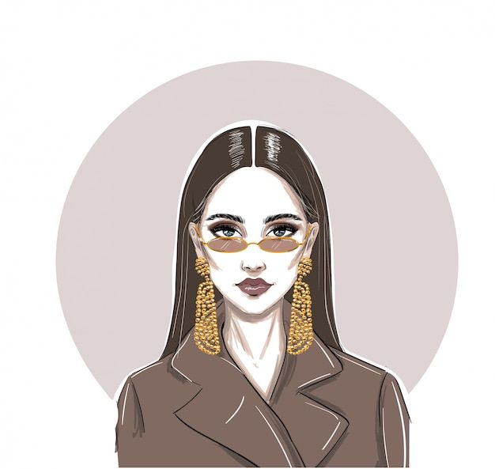
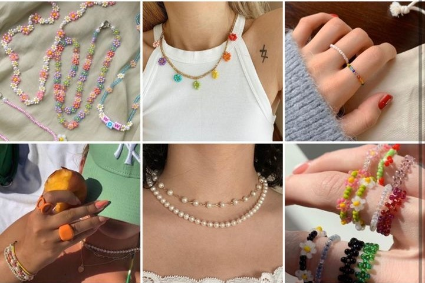
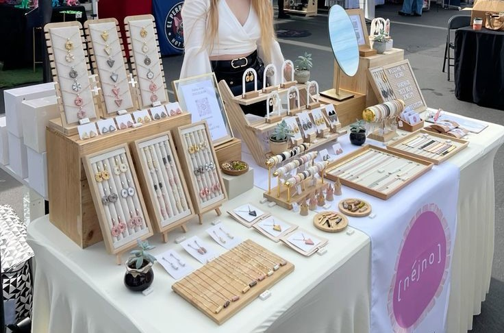

A handmade dream growing one piece at a time
I've loved creating since I was little — always drawing, crafting, and playing with beads. Jewelry quickly became my favorite way to express myself. What started as a hobby turned into a passion, and that passion grew into this small business. Each piece is made with care, creativity, and the same joy I felt as a child discovering the magic of handmade things.

In april 2012...
As a kid, I started to enjoy crafting

Since childhood, I loved making things by hand — from simple crafts to little bead bracelets. That early passion grew with me, and today, it lives on through every piece of jewelry I create.
...In july 2019...
Already had a small collection

...I even had my own little jewelry collection. That early love for creating never left me, and today it inspires every piece I make.
...In june 2024...
Completed my first art course

To deepen my skills, I enrolled in a formal art course — where I learned new techniques, explored materials, and truly refined my creative voice. It was a turning point in my journey.
...in April 2025
Turned passion into a business

With a heart full of passion and a vision shaped by years of crafting, I decided to launch my own handmade jewelry brand — a dream turned reality, one piece at a time.